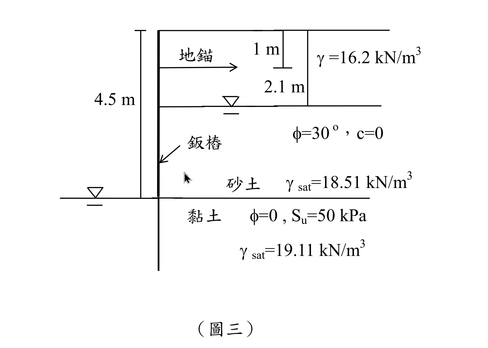

考題編號：SM-2014-3
主分類： SM-U2-3 開挖之穩定性分析
副分類： SM-U3-1 側向土壓力理論
分析法： 總應力法 / 有效應力法
標籤： 地錨鈑樁 自由端支持法 黏土 淨被動土壓力
1. 原始題目重述 (Problem Restatement)
有一 4.5 m 深基地開挖如圖三所示，地表至開挖面為砂土，$\phi=30^\circ$、$c=0$，地下水位於地表下方 2.1 m，地下水位以下與上方之砂土單位重分別為 $18.51 \text{ kN/m}^3$ 與 $16.2 \text{ kN/m}^3$，地錨施設於開挖面頂部下方 1 m 處，開挖面底部為黏土，$\phi=0$ 、不排水剪力強度 $S_u=50 \text{ kPa}$，單位重為 $19.11 \text{ kN/m}^3$，另外為施工考量，開挖面內部水位降至開挖面位置，為穩定該開挖面，試求鈑樁理論貫入深度與地錨預力。（25 分）

圖說：開挖總深度 4.5 m。擋土牆上方 1 m 處設有地錨。地表至 4.5 m 為砂土（$\phi=30^\circ$, $c=0$），地下水位於 2.1 m 處，其上 $\gamma = 16.2 \text{ kN/m}^3$，其下 $\gamma_{sat} = 18.51 \text{ kN/m}^3$。開挖面（4.5 m）以下為黏土（$\phi=0$, $S_u=50 \text{ kPa}$, $\gamma_{sat} = 19.11 \text{ kN/m}^3$）。開挖側內部水位與開挖面齊平。
2. 考題核心精神與出題者意圖 (Core Concepts & Examiner's Intent)
本題考查地錨鈑樁牆（Anchored Sheet Pile Wall）在黏土層（$\phi=0$）的貫入深度及地錨力量計算，使用自由端支持法（Free Earth Support Method）。
出題者意圖測驗：
- 多層土與地下水位水壓力：開挖面以上為砂土，需分層計算有效應力，並正確加上孔隙水壓力。
- 開挖面以下的淨土壓力（Net Pressure）：在 $\phi=0$ 之黏土層，了解如何結合上覆土重（$q$）與不排水剪力強度（$S_u$），應用總應力法計算常數之淨側向土壓力 $p_{net} = 4S_u - q$。
- 力矩與力平衡：對地錨點取力矩平衡求出理論貫入深度 $D$，再由水平力平衡求出地錨預力。
3. 解題戰略地圖與陷阱分析 (Strategic Roadmap & Trap Analysis)
作戰計畫：
- 計算開挖面以上之主動土壓力與水壓力：
- 砂土主動土壓力係數 $K_a = \tan^2(45^\circ - 30^\circ/2) = 1/3$。
- 計算 $z=0, 2.1, 4.5$ 處的有效垂直應力，乘以 $K_a$ 得到主動土壓力。
- 計算 $z=2.1$ 至 $z=4.5$ 的靜水壓力。
- 將土壓力與水壓力分成幾個簡單幾何形狀（三角形、矩形），計算作用力及其相對於地錨點的力臂與力矩。 - 計算開挖面以下之淨土壓力：
- 計算開挖面上方之總覆土壓力 $q$。
- 應用公式 $p_{net} = 4S_u - q$ 得到開挖面以下的淨側向力均勻分布。 - 力矩平衡求 $D$：
- 列出開挖面以下淨土壓力相對於地錨點的抵抗力矩（含 $D$ 的函數）。
- 令主動力矩與抵抗力矩相等，解一元二次方程式得 $D$。 - 水平力平衡求地錨預力 $T$：
- 由 $\Sigma F_x = 0$，得 $T = P_A - P_R$。
陷阱分析：
- 陷阱 1：水壓力漏算或重複計算。在有效應力法中，開挖面上方擋土側需加上孔隙水壓力。而在開挖面下黏土層，若使用總應力法推導之 $p_{net} = 4S_u - q$ 公式，已內含了水壓力的平衡，不需再外加水壓力，否則會重複計算。
- 陷阱 2：地錨位置未正確扣除。所有力矩必須對「地錨點」取矩（本題為 $z=1$ m），若誤對頂部或底部取矩會導致極大誤差。
- 陷阱 3：黏土層單位重誤用。開挖面下黏土的單位重為 $19.11 \text{ kN/m}^3$，但在計算 $p_{net} = 4S_u - q$ 時，黏土層的自重在主動與被動側相互抵消，故實際上不影響淨土壓力，若誤用會導致公式錯誤。
3.5 變數層次分析 (Variable Hierarchy Analysis)
最終目標
求出鈑樁在黏土層的理論貫入深度 $D$，以及維持平衡所需的地錨預力 $T$。
本題關鍵公式（依計算順序）
- 砂土主動土壓力係數：$K_a = \tan^2(45^\circ - \phi/2)$
- 有效主動土壓力：$\sigma_a' = K_a \sigma_v'$
- 黏土層淨被動土壓力：$p_{net} = 4S_u - \boxed{q}$
- 力矩平衡：$\Sigma M_{anchor} = M_{OT} - M_R = 0$
- 水平力平衡：$\Sigma F_x = \boxed{P_A} - \boxed{P_R} - T = 0$
L1：題目直接給定
| 符號 | 數值 | 說明 |
|---|---|---|
| $H$ | 4.5 m | 開挖深度 |
| $z_w$ | 2.1 m | 地下水位深度（擋土側） |
| $z_a$ | 1.0 m | 地錨深度 |
| $\gamma_{sand}$ | 16.2 $\text{kN/m}^3$ | 水位上砂土單位重 |
| $\gamma_{sat, sand}$ | 18.51 $\text{kN/m}^3$ | 水位下砂土飽和單位重 |
| $\phi$ | $30^\circ$ | 砂土內摩擦角 |
| $S_u$ | 50 kPa | 黏土不排水剪力強度 |
L2：需知識點推導
開挖面以上土壓與水壓
| 符號 | 公式／來源 | 卡關? |
| --- | --- | --- |
| $K_a$ | $\tan^2(45^\circ - \phi/2)$ | |
| $\gamma'$ | $\gamma_{sat, sand} - \gamma_w$ | |
| $\sigma_{v1}'$ | $z_w \cdot \gamma_{sand}$ | |
| $\sigma_{v2}'$ | $\sigma_{v1}' + (H - z_w) \cdot \gamma'$ | |
開挖面以下淨土壓力
| 符號 | 公式／來源 | 卡關? |
| --- | --- | --- |
| $q$ | $z_w \gamma_{sand} + (H - z_w) \gamma_{sat, sand}$ | |
| $p_{net}$ | $4S_u - q$ | |
L3：深層知識（不懂就卡住）
| 知識點 | 說明 | 卡關? |
|---|---|---|
| 黏土層淨土壓力公式 $p_{net} = 4S_u - q$ | 對於 $\phi=0$ 之黏土層，其主動側總應力 $\sigma_a = (\gamma z + q) - 2S_u$，被動側 $\sigma_p = \gamma z + 2S_u$。淨應力 $p_{net} = \sigma_p - \sigma_a = 4S_u - q$，此為均勻分布且與深度無關。 | |
| 自由端支持法 (Free Earth Support) | 假設鈑樁底端有足夠剛度但不產生反向彎矩，力矩平衡直接對地錨點取矩 $\Sigma M = 0$，解出貫入深度 $D$ 即可，無需考慮基底反曲點。 |
4. 步驟化詳細計算過程 (Step-by-Step Detailed Calculation)
Step 1：開挖面上方（$0 \sim 4.5$ m）之主動土壓力與水壓力計算
砂土之主動土壓力係數：
$$ K_a = \tan^2\left(45^\circ - \frac{30^\circ}{2}\right) = \frac{1}{3} $$
水位以上砂土 $\gamma = 16.2 \text{ kN/m}^3$，水位以下砂土有效單位重 $\gamma' = 18.51 - 9.81 = 8.7 \text{ kN/m}^3$。
各深度之有效垂直應力 $\sigma_v'$、主動土壓力 $\sigma_a'$ 與水壓力 $u$：
-
深度 $z = 0$ m：
$$ \sigma_v' = 0 \text{ kPa} \implies \sigma_a' = 0 \text{ kPa} $$ -
深度 $z = 2.1$ m（地下水位）：
$$ \sigma_v' = 16.2 \times 2.1 = 34.02 \text{ kPa} $$
$$ \sigma_a' = 34.02 \times \frac{1}{3} = 11.34 \text{ kPa} $$
$$ u = 0 \text{ kPa} $$ -
深度 $z = 4.5$ m（開挖面）：
$$ \sigma_v' = 34.02 + 8.7 \times (4.5 - 2.1) = 34.02 + 8.7 \times 2.4 = 54.9 \text{ kPa} $$
$$ \sigma_a' = 54.9 \times \frac{1}{3} = 18.3 \text{ kPa} $$
$$ u = 9.81 \times 2.4 = 23.544 \text{ kPa} $$
Step 2：主動土壓力與水壓力之受力及對地錨（$z=1$ m）之力矩
將作用力分解為四個區塊，並計算對地錨點之距離（力臂）與力矩：
-
$P_1$（$0 \sim 2.1$ m 之三角形土壓力）：
$$ P_1 = \frac{1}{2} \times 11.34 \times 2.1 = 11.907 \text{ kN/m} $$
作用點深度 $z = 2.1 \times \frac{2}{3} = 1.4$ m
對地錨力臂 $= 1.4 - 1.0 = 0.4$ m
$$ M_{OT,1} = 11.907 \times 0.4 = 4.7628 \text{ kN-m/m} $$ -
$P_2$（$2.1 \sim 4.5$ m 之矩形土壓力）：
$$ P_2 = 11.34 \times 2.4 = 27.216 \text{ kN/m} $$
作用點深度 $z = 2.1 + \frac{2.4}{2} = 3.3$ m
對地錨力臂 $= 3.3 - 1.0 = 2.3$ m
$$ M_{OT,2} = 27.216 \times 2.3 = 62.5968 \text{ kN-m/m} $$ -
$P_3$（$2.1 \sim 4.5$ m 之三角形土壓力增量）：
$$ P_3 = \frac{1}{2} \times (18.3 - 11.34) \times 2.4 = \frac{1}{2} \times 6.96 \times 2.4 = 8.352 \text{ kN/m} $$
作用點深度 $z = 2.1 + 2.4 \times \frac{2}{3} = 3.7$ m
對地錨力臂 $= 3.7 - 1.0 = 2.7$ m
$$ M_{OT,3} = 8.352 \times 2.7 = 22.5504 \text{ kN-m/m} $$ -
$P_4$（$2.1 \sim 4.5$ m 之三角形水壓力）：
$$ P_4 = \frac{1}{2} \times 23.544 \times 2.4 = 28.2528 \text{ kN/m} $$
作用點深度 $z = 2.1 + 2.4 \times \frac{2}{3} = 3.7$ m
對地錨力臂 $= 3.7 - 1.0 = 2.7$ m
$$ M_{OT,4} = 28.2528 \times 2.7 = 76.28256 \text{ kN-m/m} $$
開挖面上方總水平力與總傾覆力矩：
$$ P_A = P_1 + P_2 + P_3 + P_4 = 11.907 + 27.216 + 8.352 + 28.2528 = 75.7278 \text{ kN/m} $$
$$ M_{OT} = 4.7628 + 62.5968 + 22.5504 + 76.28256 = 166.19256 \text{ kN-m/m} $$
Step 3：開挖面以下（黏土層）淨側向土壓力計算
開挖面（$z = 4.5$ m）上方之總覆土壓力 $q$：
$$ q = \gamma_{sand} \times 2.1 + \gamma_{sat, sand} \times 2.4 = 16.2 \times 2.1 + 18.51 \times 2.4 = 34.02 + 44.424 = 78.444 \text{ kPa} $$
由於黏土層 $\phi=0$，使用總應力法計算其淨被動側向壓力 $p_{net}$（此力為常數，作用方向向開挖側）：
$$ p_{net} = 4S_u - q = 4(50) - 78.444 = 200 - 78.444 = 121.556 \text{ kPa} $$
假設理論貫入深度為 $D$。淨抵抗力為一矩形分布：
$$ P_R = p_{net} \times D = 121.556 D $$
作用點位於開挖面以下 $D/2$ 處，相對於地錨之距離為 $(4.5 - 1.0) + D/2 = 3.5 + 0.5D$。
$$ M_R = P_R \times (3.5 + 0.5D) = 121.556 D (3.5 + 0.5D) = 425.446 D + 60.778 D^2 $$
Step 4：對地錨點取力矩平衡，求解貫入深度 $D$
$$ \Sigma M_{anchor} = 0 \implies M_R = M_{OT} $$
$$ 60.778 D^2 + 425.446 D = 166.19256 $$
同除以 $60.778$ 可簡化為：
$$ D^2 + 7.000 D - 2.7344 = 0 $$
代入公式解：
$$ D = \frac{-7 + \sqrt{7^2 - 4(1)(-2.7344)}}{2} = \frac{-7 + \sqrt{49 + 10.9376}}{2} = \frac{-7 + 7.7419}{2} = 0.371 \text{ m} $$
$$ \boxed{D = 0.371 \text{ m}} $$
Step 5：水平力平衡，求解地錨預力 $T$
$$ \Sigma F_x = 0 \implies T + P_R = P_A $$
$$ T = P_A - P_R = 75.7278 - 121.556 \times 0.37097 $$
$$ T = 75.7278 - 45.093 = 30.635 \text{ kN/m} $$
$$ \boxed{T = 30.63 \text{ kN/m}} $$
5. 關鍵爭議點與進階探討 (Critical Issues & Advanced Discussion)
- 理論貫入深度與實際貫入深度：題目要求「理論貫入深度」，故上述所求出之 $D=0.371\text{ m}$ 即可。在工程實務中，通常會將此深度乘以一個安全係數（如增加 $20\% \sim 30\%$），或於被動土壓力上先除以安全係數後再計算，以決定實際貫入深度。
- 孔隙水壓力處理方式：在推導 $\phi=0$ 的淨土壓力 $p_{net} = 4S_u - q$ 時，所使用的 $q$ 是總覆土應力，而擋土與開挖兩側的水壓力已隱含在總應力差值中相互抵消。因此在計算 $p_{net}$ 時不可再額外扣除有效水壓，否則將導致重複計算錯誤。這是 $\phi=0$ 總應力分析法的標準特性。